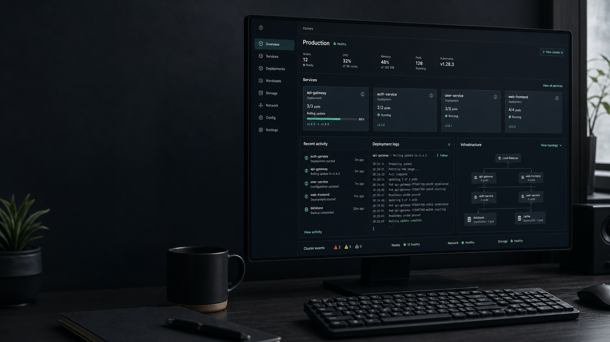

Non-root runtime
Pods run with token automount disabled, privilege escalation off, dropped capabilities, and a read-only root filesystem.

Self-hosted deployments for small teams
A compact developer platform that builds containers, deploys to Kubernetes, configures HTTPS, records releases, and rolls back unhealthy rollouts.
Run it locally
DeployKit stays close to the tools platform engineers already use: Go, Docker, kubectl, kind, Terraform, and Git.
brew install go kubectl kind
brew tap hashicorp/tap
brew install hashicorp/tap/terraformmake check-prereqs
make build
make smoke-testwinget install GoLang.Go
winget install Docker.DockerDesktop
winget install Kubernetes.kubectl
winget install Kubernetes.kind
winget install Git.Git
winget install Hashicorp.Terraform.\scripts\check-prereqs.ps1
New-Item -ItemType Directory -Force bin
go build -o bin\deployctl.exe .\cmd\deployctlsudo apt-get update
sudo apt-get install -y git make ca-certificates curl gnupgscripts/check-prereqs.sh
make build
make smoke-testDeployment flow
The CLI owns orchestration. Kubernetes owns runtime behavior. That keeps the platform understandable and resilient.
Docker packages the application and pushes an immutable image tag to the registry.
DeployKit renders Namespace, ServiceAccount, RBAC, Deployment, Service, and Ingress manifests.
Readiness checks, rollout status, and deployment log scanning decide whether the release is healthy.
Successful releases are recorded. Failed rollouts trigger Kubernetes rollback.
Production-minded by default
Pods run with token automount disabled, privilege escalation off, dropped capabilities, and a read-only root filesystem.
Failed rollout checks or matching failure logs trigger `kubectl rollout undo` without a custom scheduler.
Successful deployments write cluster-local ConfigMaps with image, tag, domain, and timestamp metadata.
A local Kubernetes API verifies generated manifests using server-side dry-run before real cluster changes.
Project guide